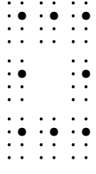

Copyright © DAISY Consortium 2024
…
The eBraille Working Group is seeking input on all aspects of this document. It is particularly interested in implementation experience both creating eBraille publication and creating reading systems in which to read them.
Any suggestions for formatting requirements that have not been covered in this best practices document yet, are welcomed. In particular, there are a number of specific formatting requirements for which examples are sought, and are indicated within this document as “issues”. Please follow the respective Github issue link and comment if you plan to provide an example, or create a new Github issue if you have another suggestion.
A suitable example consists of a short snippet of a content document, marked up according to the eBraille Tagging Best Practices, along with the expected formatted braille (for a certain row length), as rows of Unicode braille. It is valued if a short description in words (in English) of the braille formatting rule is included too.
…
The examples in this section assume that eBraille reading systems do not use the same default style sheets that web browsers do. To try these examples in a browser, make sure the following style sheet is applied and the same monospaced font and font size is used for all text:
* {
font-weight: normal;
line-height: 1rem;
letter-spacing: 0;
margin: 0;
padding: 0;
border: none;
list-style: none;
color: black;
text-decoration: none;
}Through media queries, styles may be applied conditionally depending on the type and characteristics of the device. For instance:
The following example shows how style sheets for different media may be linked
from a XHTML content document using the
[[html]] link element. As per
the recommendation, no media queries that discriminate between a braille display and
a screen are used.
The following example shows how the number of columns in a column layout may be
adapted according to the width of the viewport, using
the @media rule
[[css-conditional]] and width
media feature [[mediaqueries]]:
The following examples show how
the margin-top
and margin-bottom
properties [[css-box]] may be used to create blank lines between blocks of text,
and how margin-left
and margin-right may be
used to offset blocks of text from the left and right page boundaries.
A property of vertical margins is that they “collapse” with adjoining margins, meaning that they combine to form a single margin with a width that is the maximum of the collapsing margins' widths. This feature is useful to ensure that you don't get two blank lines because two adjacent elements both required a blank line in the same location.
The following examples show how the
margin-left [[css-box]] and
text-indent [[css-text]]
properties may be used to mark the start of paragraphs with an indent of two cells, or to
mark the start of list items with a “hanging” indent.
When the indentation required for overrun lines depends on the maximum hierarchy
level of the entire list,
the :has() pseudo-class
[[selectors]] may be used:
The following example shows how
the text-align
property [[css-text]] may be used to horizontally align text within a block.
The following example shows how content may be spatially arranged using the flexible box
layout module [[css-flexbox]].
flex-grow is used to align
content
horizontally. align-self
is used to align content
vertically. flex-shrink
is used to ensure text in the right column doesn't wrap.
The following example shows how
the line-height
property may be used to achieve “double line spacing”, a layout with blank rows
between rows of braille, which helps with tracking for those who are not as
experienced or have difficulty feeling the braille.
By default, certain white space characters in HTML code, such as tabs (U+0009), newlines, and multiple consecutive spaces (U+0020), are interpreted as not relevant to the final rendering, because white space is often used to format (line wrap and indent) the source code. However sometimes white space characters are relevant to the rendering of the document, in which case the author must indicate that they must be preserved. This is done using the white-space property.
The following example of a number line illustrates this. The white space characters must be preserved because they are essential for the correct formatting of the number line. Note how, by “pre-formatting” (or hard-coding) the number line, it is not able to adapt to varying device widths.
Another use case for the pre element is spatially arranged math. In theory
the techniques from Alignment, positioning and spatial
arrangement could be applied for this particular case, but that may not be the case
for every mathematical expression, and pre-formatting content may be more practical
anyway.
Sometimes it is necessary to break long words across rows, to save space, or
simply because a word is too long to fit within one row. The section
on Text Splitting in [[tagging]]
explains how this can be achieved using the Unicode character U+00AD (SOFT
HYPHEN) and the
[[html]] wbr element.
The following example shows how one can specify the symbol or string that must
appear before the break of a word, using
the hyphenate-character.
The following example shows how
the text-wrap-style
property [[css-text-4]] property may be used to balance the remaining space on
each row when text spans multiple rows.
Different approaches to creating lines exist. The recommended approach for border
lines is to use border
images. For horizontal lines, a (sometimes necessary) alternative is to
specify the line as a string of braille characters. Finally, for good measure,
the most commonly used approach to creating borders in print, namely
the border-style
property, is mentioned as an option for braille too.
As explained below in Drawing borders with the
‘border-style’ property,
the border-style
and border-width
properties may be used to draw lines with a certain thickness and
pattern. For screen/print CSS, this is the most common method. However, for
braille, ultimately it is
the eBraille reading system
that approximates the lines with a series of raised braille dots. More
control over the exact braille dot patterns used to make up the lines can be
achieved through
border images
[[css-backgrounds]]. This is the recommended approach.
The desired border is obtained by choosing a source image that has specific braille cells at specific positions. The “A standard box” example below shows a box consisting of dot 5 cells on all sides. The corresponding source image is made up of nine (three by three) equally sized areas, all except the middle one holding a dot 5 cell. Each of the eight areas holds the pattern to be used for the corresponding corner or side of the border.

Another way to create (horizontal) lines is by specifying them as strings of Unicode
braille characters. Since the braille characters should not be part of the content,
but should rather be generated by the style sheet, the lines must be specified as the
content [[css-content]]
of ::before or
::after pseudo-elements [[css-pseudo]]. To make the layout adapt to
varying device widths, the line pattern is extended long enough to always overflow the
viewport. The overflow
[[css-overflow]] and
white-space [[css-text]]
properties are used to hide the overflowing part of the line, while the
justify-content
property [[css-flexbox]] is used to align it to the right or left.
This approach is suitable for horitontal lines only. For vertical lines, one must resort to border images. On the other hand, the border image approach is less suitable for use cases where the line goes together with other other content on the same row. This is illustrated in the following examples.
The following examples show how the same technique may be used to create a line of guide dots preceding a print page number.
Guide dots may also be used within a table layout, as the following examples shows.
border-style’ propertyThe following examples show how
the border-style
and border-width
properties [[css-backgrounds]] may be used to create box
lines. margin
and padding are used
to control the spacing between the box lines, the text within the box, and the
surrounding text.
Generally this approach is more complicated than the “border-image” approach. This is why the latter is recommended.
This section will contain guidance for formatting requirements such as:
A float is an element that is shifted to the left or right side of the line, allowing surrounding content to flow around it. The next example demonstrates the principle. Line numbers are taken out of the normal flow and are floated to the right side.